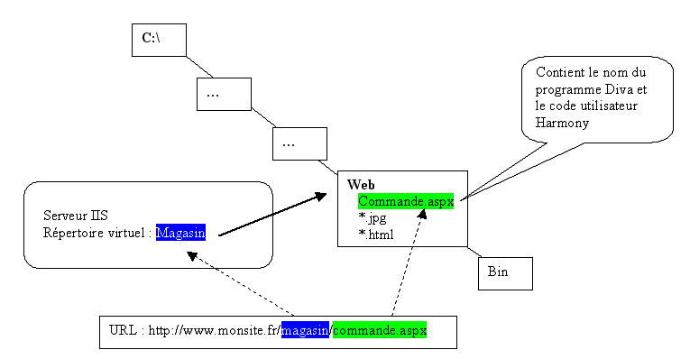

Par la suite, nous nommerons Base le répertoire de base de votre application (celui pointé par le répertoire virtuel IIS associé). Pour créer un nouveau site :
Copiez le contenu complet du répertoire Divalto/Internet/WebServeur dans le répertoire Base.
Dans Base, placez ensuite tous les fichiers .html (référencés par les « panels html ») utilisés dans les masques de votre application.
Dans Base/img_style, placez toutes les images (.gif, .jpeg, …) fixes (bitmaps et boutons graphiques déclarés dans la feuille de styles) utilisées dans les masques de votre application.
Dans Base/<image>, placez toutes les images (.gif, .jpeg, …) variables (bitmaps et boutons graphiques variables) utilisées dans les masques de votre application. <image> représente le nom du dossier référencé dans le paramètre « Répertoire » des propriétés des objets concernés dans Xwin. Remarque : il est possible de référencer dans un masque un nombre quelconque de dossiers d’images (chaque dossier devant bien entendu recevoir les images qui le concernent).
Renommez le fichier WebApplic.aspx (donnez-lui le nom qui devra figurer dans l’URL permettant de charger l’application depuis le navigateur Web).
Editez le contenu du fichier renommé (avec le bloc-note par exemple) et modifiez le nom du programme Diva à lancer et le nom de l’utilisateur Divalto sous lequel tournera l’application (figurés ici en caractères italiques gras) :
<asp:Label id="parametres" runat="server" Visible="False"><program>testweb.dhop<user>$WEB</asp:Label>
Un troisième paramètre peut être ajouté pour spécifier le chemin du fichier Xlogf.dhfi à utiliser pour rechercher l’utilisateur Divalto (utile en mode ASP).
Exemples :
… <user>DEMO<XlogServer>//nom_de_serveur/divalto/societeUn …
… <user>DEMO<XlogServer>/divalto/societeDeux … (recherche locale au serveur Web)
Voir également : Choix du compte utilisateur Windows pour les programmes Web.
Pour des raisons de sécurité, Windows interdit par défaut la saisie par l'utilisateur des caractères "<" et ">" dans un champ ou dans un texte multi-lignes (car ces caractères servent de délimiteurs dans un source HTML). Pour éviter un arrêt brutal du programme, le fichier .aspx livré en standard contient sur la première ligne (<%@ Page ...) le paramètre validateRequest="false" qui permet de passer outre à cette interdiction. Mais attention, la présence de ce paramètre peut constituer une faille de sécurité : il suffit de le retirer du fichier .aspx pour retrouver le fonctionnement par défaut de Windows.
Remarques :
Lorsqu’un utilisateur soumet la page aspx dans son navigateur, le programme Diva correspondant est lancé en utilisant les chemins implicites et les droits de l’utilisateur spécifié dans cette page.
Il n’y a aucune obligation quant aux répertoires d’installation des objets et des fichiers Harmony propres à l’application, pourvu que les chemins implicites de cet utilisateur permettent d’y accéder.
Veillez donc à déclarer cet utilisateur dans la liste des utilisateurs de votre application Divalto ou dans la liste des utilisateurs d’Harmony (Xlog1.dhop) et à correctement paramétrer ses chemins implicites et droits d’accès.
Tout comme il est possible de créer plusieurs répertoires virtuels IIS, vous pouvez créer plusieurs sites Web sur un même serveur.
Schéma récapitulatif des répertoires

Tests de premier niveau
Nous supposerons ici que vous avez nommé Applic le répertoire virtuel IIS. Sur votre serveur et dans votre navigateur :
Appelez la page standard d’erreur http://localhost/Applic/erreursession.html.
Ceci permet de vérifier qu’une simple page html s’affiche correctement.
Appelez la page http://localhost/Applic/helloworld.aspx.
Ceci permet de vérifier qu’une application Harmony Web simple tourne correctement. Attention, sous Windows XP, le service pack 2 doit être obligatoirement installé : en son absence, ce test provoque un plantage.
En cas d'erreur
Lors d'une tentative d'affichage d'une page aspx, un problème de droit d'accès peut entraîner une erreur du type :
« Impossible de charger la DLL 'dhx2yweb.dll' : Le module spécifié est introuvable. (Exception de HRESULT : 0x8007007E) »
(Cf. le site Microsoft http://support.microsoft.com/kb/332167 ; chapitre <Configure Sub-Authentication on an IIS 6.0 Upgrade in Worker Process Isolation Mode>, point 2 : Exécuter tous les processus de travail qui utilisent l'authentification anonyme sous l'identité du système local).
La solution consiste à reconfigurer la propriété Identité du modèle de processus dans les paramètres avancés du pool d'applications : utiliser le compte LocalSystem (système local) plutôt que NetworkService (service réseau).